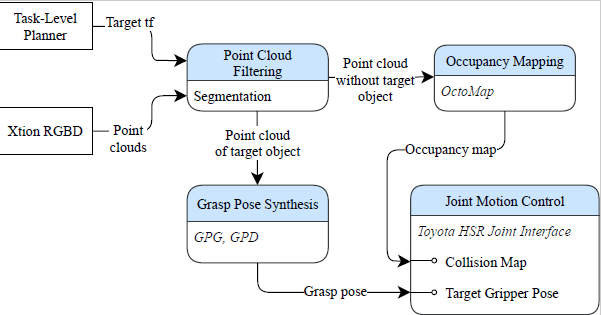

HSR Manipulation
The manipulation stack incorporates grasp synthesis directly on target object point clouds, including efficient point cloud filtering and segmentation. We use Grasp Pose Detection(GPD) for grasp pose synthesis, giving us the 6-dimensional pose of approach for the highest quality grasp generated Click on the button below to see our HSR grasping a potted plant!
Here is a brief description of how the manipulation system goes from seeing the object to grasping it:
Given the object’s 3D pose provided by the our object detection system, the manipulation system segments the object’s point cloud out of the point cloud input and feeds it into the grasp synthesis module. This module then returns a ranked list of feasible candidate poses for the end effector to approach from. Accordingly, the system moves to the highest-ranked end effector pose to attempt to grasp the object while avoiding collisions. Motion control for the HSR arm and gripper is done via the Toyota joint motion control interface.